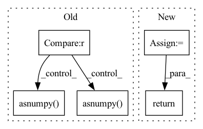

Pattern ID :26818
Before Change
def where(condition, a, b):
inner where
if version.parse(mindspore.__version__) <= version.parse(MS_COMPATIBLE_VERSION) :
dtype = a.dtype
condition = condition.asnumpy()
a = a.asnumpy()
b = b.asnumpy()
return Tensor(numpy.where(condition, a, b), dtype)
return ops.where(condition, a, b)
def split(x, size, axis=0):After Change
if not isinstance(y, Tensor):
raise TypeError(f"For "where", at least one of "x" and "y" should be Tensor, \
but got x:{type(x)}, y:{type(y)}.")
x = cast_(x, y.dtype)
elif isinstance(y, (int, float)):
if not isinstance(x, Tensor):
raise TypeError(f"For "where", at least one of "x" and "y" should be Tensor, \
but got x:{type(x)}, y:{type(y)}.")
y = cast_(y, x.dtype)
output_shape = _calc_broadcast_shape(x.shape, y.shape, condition.shape)
condition = broadcast_to(condition, output_shape)
x = broadcast_to(x, output_shape)
y = broadcast_to(y, output_shape)
_select = _get_cache_prim(ops.Select)()
return _select(condition, x, y)
@constexpr
def get_max_value(x, y, z):In pattern: SUPERPATTERN
Frequency: 4
Non-data size: 5
Instances Fragment ID: 80161607
Project Name: mindspore-lab/mindnlp
Commit Name: 60bfafb3c99d7dec61f86c61b4f9286b7e0f3726
Time: 2023-03-25
Author: lvyufeng@cqu.edu.cn
File Name: mindnlp/_legacy/functional.py
M Class Name: AnonimousClass
N Class Name: AnonimousClass
M Method Name: where(3)
N Method Name: where(3)
M Parent Class:
N Parent Class:
M File Name: mindnlp/_legacy/functional.py
N File Name: mindnlp/_legacy/functional.py
M Start Line: 85
M End Line: 91
N Start Line: 725
N End Line: 742
Before Change
def _predict(self, *inputs):
if self._last_iteration and self._remainder_model is not None :
self._remainder_model.run(**self._to_tvm_tensor(*inputs))
return self._remainder_model.get_output(0).asnumpy() .ravel()
self.model.run(**self._to_tvm_tensor(*inputs))
return self.model.get_output(0).asnumpy() .ravel()
class TVMSklearnContainerClassification(TVMSklearnContainerRegression, SklearnContainerClassification):After Change
def _predict(self, *inputs):
out = self._predict_common(0, *inputs)
return out.ravel()
class TVMSklearnContainerClassification(TVMSklearnContainerRegression, SklearnContainerClassification): Fragment ID: 80161703
Project Name: microsoft/hummingbird
Commit Name: 6cab8ee8043957814fb5d5282f0b4258477ae56f
Time: 2020-12-04
Author: masahi129@gmail.com
File Name: hummingbird/ml/_container.py
M Class Name: TVMSklearnContainerRegression
N Class Name: TVMSklearnContainerRegression
M Method Name: _predict(1)
N Method Name: _predict(1)
M Parent Class: SklearnContainerRegression,TVMSklearnContainer
N Parent Class: SklearnContainerRegression,TVMSklearnContainer
M File Name: hummingbird/ml/_container.py
N File Name: hummingbird/ml/_container.py
M Start Line: 545
M End Line: 549
N Start Line: 549
N End Line: 550
Before Change
def _decision_function(self, *inputs):
if self._last_iteration and self._remainder_model is not None :
self._remainder_model.run(**self._to_tvm_tensor(*inputs))
return self._remainder_model.get_output(1).asnumpy() .ravel()
else:
self.model.run(**self._to_tvm_tensor(*inputs))
return self.model.get_output(1).asnumpy() .ravel()
After Change
def _decision_function(self, *inputs):
out = self._predict_common(1, *inputs)
return out.ravel()
Fragment ID: 80161642
Project Name: microsoft/hummingbird
Commit Name: 6cab8ee8043957814fb5d5282f0b4258477ae56f
Time: 2020-12-04
Author: masahi129@gmail.com
File Name: hummingbird/ml/_container.py
M Class Name: TVMSklearnContainerAnomalyDetection
N Class Name: TVMSklearnContainerAnomalyDetection
M Method Name: _decision_function(1)
N Method Name: _decision_function(1)
M Parent Class: SklearnContainerAnomalyDetection,TVMSklearnContainerRegression
N Parent Class: SklearnContainerAnomalyDetection,TVMSklearnContainerRegression
M File Name: hummingbird/ml/_container.py
N File Name: hummingbird/ml/_container.py
M Start Line: 571
M End Line: 576
N Start Line: 568
N End Line: 569